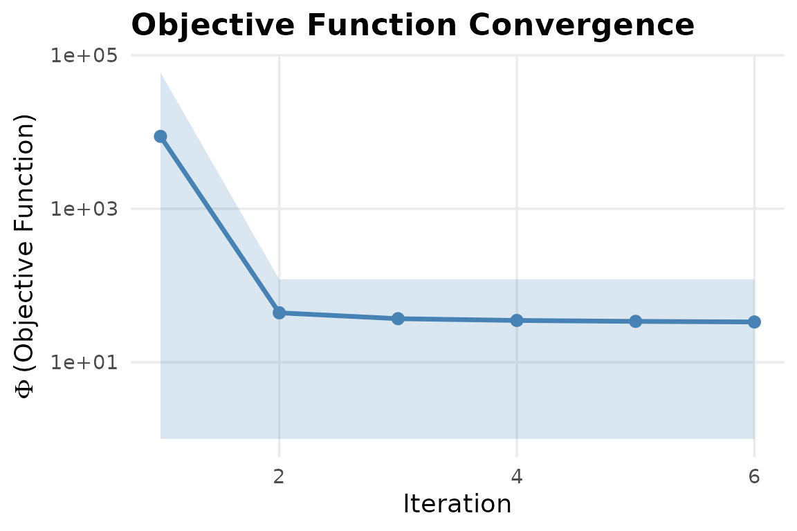

In-Process IES via R Callback -- apsimx Adapter
Source:vignettes/apsim-callback.Rmd
apsim-callback.RmdWhy a callback driver?
pesto_ies() shells out to the pestpp-ies
binary, which writes and reads .pst / ensemble /
observation files between every realisation. For an in-process R forward
model (an apsimx wrapper, a Python bridge, or a fast
synthetic test problem), that file round-trip is pure overhead.
pesto_ies_callback() keeps the same C++ ensemble kernel
(ensemble_solution(), Chen & Oliver 2013) but drives
the outer loop in R, calling the forward model in-process.
This document shows:
- The driver on a synthetic linear-Gaussian problem (recovers truth).
- The typed forward-model contract
(
pesto_forward_model()) shared by both adapter modes, including parallel, fault-tolerant evaluation. - The shape of the
apsim_callback()adapter forapsimx(run block is disabled – needs APSIM installed). - Multi-fidelity calibration: a cheap surrogate ramped to an expensive
model through a
fidelity_schedule.
A synthetic recovery example
library(PESTO)
npar <- 4L
nobs <- 8L
nreal <- 120L
sigma <- 0.05
G <- matrix(rnorm(nobs * npar), nobs, npar)
theta_true <- c(1.0, -0.5, 2.0, 0.25)
y <- as.numeric(G %*% theta_true) + rnorm(nobs, sd = sigma)
names(y) <- paste0("o", seq_len(nobs))
# Forward model: any function that takes an (nreal x npar) matrix and
# returns an (nreal x nobs) matrix.
forward <- function(theta) theta %*% t(G)
prior <- matrix(rnorm(nreal * npar), nreal, npar,
dimnames = list(NULL, paste0("p", seq_len(npar))))Run six IES iterations with a single lambda:
fit <- pesto_ies_callback(
forward_model = forward,
prior_ensemble = prior,
obs = y,
obs_sd = sigma,
noptmax = 6L,
lambda = 1.0,
verbose = FALSE
)Diagnostics:
prior_rmse <- sqrt(mean((colMeans(prior) - theta_true)^2))
post_mean <- colMeans(as.matrix(fit$par_ensemble[, -1L]))
post_rmse <- sqrt(mean((post_mean - theta_true)^2))
cat(sprintf("prior RMSE: %.4f\n", prior_rmse))
#> prior RMSE: 1.1300
cat(sprintf("posterior RMSE: %.4f\n", post_rmse))
#> posterior RMSE: 0.0232
mean_phi <- vapply(fit$iterations, `[[`, numeric(1L), "mean_phi")
print(mean_phi)
#> [1] 17452.123014 1.534500 1.533925 1.533362 1.532812
#> [6] 1.532273Posterior RMSE should be a small fraction of prior RMSE, and mean phi should decrease across iterations.
The full per-realisation phi trajectory:
plot_phi(fit)
#> Warning in melt.data.table(phi_dt, id.vars = iter_col, measure.vars = phi_cols,
#> : 'measure.vars' [realisation, phi] are not all of the same type. By order of
#> hierarchy, the molten data value column will be of type 'double'. All measure
#> variables not of type 'double' will be coerced too. Check DETAILS in
#> ?melt.data.table for more on coercion.
The forward-model contract
A bare function(theta) -> obs is the quickest way in,
but it carries no metadata: the driver cannot know the output dimension
ahead of time, cannot run realisations in parallel, and cannot express a
failure budget. pesto_forward_model() wraps the same
callable in a typed contract that does. It is the single object both the
native-callback driver here and the classic .pst path
(pesto_ies()) are built to honour, so a forward model
travels between modes unchanged.
fm <- pesto_forward_model(
fn = forward,
n_obs = nobs,
param_names = paste0("p", seq_len(npar)),
on_failure = "na"
)
# A contract object is evaluated directly with pesto_evaluate(); the
# returned matrix carries the per-realisation failure count.
sim <- pesto_evaluate(fm, prior)
cat(sprintf("evaluated %d x %d; failures: %d\n",
nrow(sim), ncol(sim), attr(sim, "n_failures")))
#> evaluated 120 x 8; failures: 0
# Passing the contract object to the driver is equivalent to passing the
# bare function -- the bare form is auto-wrapped internally.
fit_typed <- pesto_ies_callback(fm, prior, y, sigma,
noptmax = 6L, verbose = FALSE)
identical(
as.matrix(fit_typed$par_ensemble[, -1L]),
as.matrix(fit$par_ensemble[, -1L])
)
#> [1] TRUEParallel, fault-tolerant ensembles
For an expensive forward model – an APSIM ensemble especially – the
realisations within one iteration are embarrassingly parallel. Build the
contract with parallel = "multicore" and the evaluation
engine dispatches rows across forked workers via
parallel::mclapply(). For reproducible draws, set an
"L'Ecuyer-CMRG" RNG first; each realisation then receives
an independent stream.
RNGkind("L'Ecuyer-CMRG")
set.seed(42L)
fm_par <- pesto_forward_model(
fn = forward,
n_obs = nobs,
parallel = "multicore",
n_cores = 4L
)
fit_par <- pesto_ies_callback(fm_par, prior, y, sigma, noptmax = 6L)A custom map_fn (any lapply-shaped
function) is the escape hatch for cross-platform or cluster backends,
for example future.apply::future_lapply or a
mirai map. Failures are governed by on_failure
("na" tolerates, "stop" aborts) and by
max_fail_frac, which aborts once the fraction of failed
realisations in any single evaluation exceeds the budget – a guardrail
against a silently collapsing ensemble.
Guard: calibrate to field-realistic uncertainty, not the mean’s standard error
The single most consequential number you hand
pesto_ies_callback() is obs_sd – the
observation standard deviation, which sets the IES weights
.
It is also the easiest to get wrong, in a way that fails silently. The
failure mode is over-determination: conditioning the ensemble
on a likelihood that is far tighter than the data deserve. The smoother
then drives every realisation onto the same point, the posterior spread
collapses, and the run reports an answer with a credible interval far
too narrow to be honest – confidently wrong.
The usual route into this trap is statistical, not a typo. Suppose
each target observation is itself the mean of
field replicates. The replicate spread – the genuine
measurement-plus-process noise a single modelled value must match – is
.
The standard error of that mean is
,
which is smaller by a factor of
and shrinks further as you average more plots. Passing the standard
error as obs_sd tells the smoother the data pin the model
roughly
times more sharply than they really do. The forward model cannot be that
right, so the ensemble has nowhere to go but onto a single collapsed
point.
The contrast below runs the same synthetic problem twice. The first
call passes the field-realistic replicate spread sigma; the
second passes the standard error of a mean over m = 40
replicates, about eight times too small.
m <- 40L
obs_se <- sigma / sqrt(m) # the standard error of a 40-replicate mean
fit_ok <- pesto_ies_callback(
forward, prior, y,
obs_sd = sigma, # field-realistic replicate spread
noptmax = 6L, verbose = FALSE
)
fit_collapsed <- pesto_ies_callback(
forward, prior, y,
obs_sd = obs_se, # the over-precise likelihood -- the trap
noptmax = 6L, verbose = FALSE
)The collapse does not announce itself in the posterior mean. On this linear-Gaussian toy both runs recover the truth to three figures. It announces itself in the posterior spread and in whether the credible interval still covers the truth:
spread <- function(fit) {
mean(apply(as.matrix(fit$par_ensemble[, -1L]), 2L, sd))
}
coverage_90 <- function(fit, truth) {
pe <- as.matrix(fit$par_ensemble[, -1L])
lo <- apply(pe, 2L, quantile, 0.05)
hi <- apply(pe, 2L, quantile, 0.95)
mean(truth >= lo & truth <= hi) # fraction of params inside the band
}
data.frame(
obs_sd = c(sigma, obs_se),
case = c("field-realistic", "over-precise (SE of mean)"),
mean_post_sd = c(spread(fit_ok), spread(fit_collapsed)),
coverage_90_pct = 100 * c(coverage_90(fit_ok, theta_true),
coverage_90(fit_collapsed, theta_true))
)
#> obs_sd case mean_post_sd coverage_90_pct
#> 1 0.050000000 field-realistic 3.560357e-03 50
#> 2 0.007905694 over-precise (SE of mean) 9.266982e-05 0The over-precise run’s posterior spread is a small fraction of the honest run’s, and its 90 per-cent credible band has stopped covering the truth entirely. The ensemble is confident and wrong.
PESTO records the collapse directly.
ensemble_spread_ess() – the spectral participation ratio of
the parameter anomaly covariance, the effective number of
variance-carrying directions – is logged on every iteration as
spread_ess and as the ratio spread_ess_ratio
(relative to the ensemble size). A ratio that falls steeply toward zero
across iterations is the diagnostic signature of an ensemble draining
its spread:
ess_ratio <- function(fit) {
vapply(fit$iterations, `[[`, numeric(1L), "spread_ess_ratio")
}
rbind(
`field-realistic` = round(ess_ratio(fit_ok), 3),
`over-precise` = round(ess_ratio(fit_collapsed), 3)
)
#> [,1] [,2] [,3] [,4] [,5] [,6]
#> field-realistic 0.341 0.342 0.342 0.343 0.344 0.345
#> over-precise 0.340 0.340 0.340 0.340 0.340 0.340The fix is to set obs_sd to the uncertainty the modelled
value must actually reproduce – the replicate-level
measurement-plus-process spread, never the standard error of an
average:
- Use the replicate standard deviation , not , when the target is a mean over measurements.
- Fold structural model-discrepancy into
obs_sd– the forward model is an approximation, and the likelihood should not pretend it matches reality more tightly than the model can. - When in genuine doubt, err wide. An over-wide
obs_sdleaves spread on the table and merely under-uses the data; an over-narrow one destroys the ensemble and reports false confidence.
When over-determination is unavoidable – many observations, few
realisations – the covariance inflation and localisation countermeasures
(vignette("inflation-localisation")) actively replenish the
collapsing spread rather than only diagnosing it. The honest
obs_sd is the first line of defence, those countermeasures
the second.
Driving APSIM through apsim_callback()
The adapter wraps apsimx so each realisation gets its
own working copy of an APSIM template, parameter edits per
param_map, a run, and an extraction step. The signature
returned matches what pesto_ies_callback() expects.
library(apsimx) # >= 2.7.0 from CRAN
# Requires a working APSIM Next Gen installation.
forward <- apsim_callback(
template = "wheat_wagga.apsimx",
param_map = list(
RUE = "Wheat.Leaf.Photosynthesis.RUE.FixedValue",
CN2 = "Soil.SoilWater.CN2Bare"
),
output_extractor = function(sim) {
# sim is the data.frame of report-table variables.
as.numeric(sim$Wheat.Grain.Total.Wt)
}
)
prior <- cbind(
RUE = runif(40, 1.0, 2.0),
CN2 = runif(40, 60, 90)
)
fit <- pesto_ies_callback(
forward_model = forward,
prior_ensemble = prior,
obs = c(y_2018 = 4500, y_2019 = 5200, y_2020 = 4900),
obs_sd = 250,
noptmax = 4L
)
summary(fit$par_ensemble)Failure handling
Per-realisation APSIM crashes (corrupt config, solver divergence,
missing report variable) are caught by the adapter and emerge as
NA rows. pesto_ies_callback()’s
on_failure = "na" (default) carries those realisations
forward unchanged so the ensemble survives partial failures. Setting
on_failure = "stop" aborts as soon as one row is
missing.
Concurrency
The apsim_callback() closure writes each realisation to
its own uniquely-named working file, so it is safe to evaluate in
parallel: wrap it in a
pesto_forward_model(parallel = "multicore") exactly as
above and the ensemble runs across forked workers, each invoking APSIM
on its own input. Start with a modest n_cores –
apsimx’s own thread-safety under heavy ensemble load has
not been independently characterised. For pure-R synthetic models the
serial loop is already fast enough that the overhead is dominated by
ensemble_solution() itself.
Multi-fidelity calibration
Process-based crop models expose a cost/accuracy dial: a daily
time-step with a lite soil profile is cheap; a sub-daily step with the
full profile is expensive. pesto_multifidelity_model()
makes that dial first-class. It bundles an ordered stack of fidelity
levels – cheapest first – and the IES driver picks a level per iteration
through a fidelity_schedule, so early iterations explore
cheaply and late iterations sharpen against the expensive truth. The
final ensemble is always refreshed at the highest fidelity.
# Cheap level: the linear model with a small systematic bias.
# Expensive level: the unbiased truth.
cheap_fn <- function(theta) theta %*% t(G) + 0.30
expensive_fn <- forward
mf <- pesto_multifidelity_model(
levels = list(
pesto_forward_model(fn = cheap_fn, n_obs = nobs, fidelity = 0L),
pesto_forward_model(fn = expensive_fn, n_obs = nobs, fidelity = 1L)
),
costs = c(1, 25) # the expensive level is ~25x dearer per run
)
# Ramp: two cheap iterations, then four expensive ones.
fit_mf <- pesto_ies_callback(
forward_model = mf,
prior_ensemble = prior,
obs = y,
obs_sd = sigma,
noptmax = 6L,
fidelity_schedule = c(0L, 0L, 1L, 1L, 1L, 1L),
verbose = FALSE
)
mf_rmse <- sqrt(mean(
(colMeans(as.matrix(fit_mf$par_ensemble[, -1L])) - theta_true)^2
))
cat(sprintf("multi-fidelity posterior RMSE: %.4f\n", mf_rmse))
#> multi-fidelity posterior RMSE: 0.2592When a cheap level is run over the whole ensemble and the expensive
level over only a subset, mf_control_variate() lifts the
cheap outputs toward the expensive ones with the variance-minimising
affine correction – the plug-in primitive for a surrogate cascade:
sub <- 1:20
low_all <- pesto_evaluate(mf, prior, level = 0L)
low_sub <- low_all[sub, , drop = FALSE]
high_sub <- pesto_evaluate(mf, prior[sub, , drop = FALSE], level = 1L)
corrected <- mf_control_variate(low_all, high_sub, low_sub)
cat(sprintf("mean |cheap - corrected| over the ensemble: %.4f\n",
mean(abs(low_all - corrected))))
#> mean |cheap - corrected| over the ensemble: 0.3000ODE / compartmental forward-model templates
Not every forward model is a simulator behind an executable. A very
large class – crop growth, epidemic dynamics, nutrient or solute
transport, pharmacokinetics – is a small system of ordinary differential
equations integrated forward in time, with the observation vector read
off the state trajectory. PESTO ships these as ready-to-use templates
that return the same typed pesto_forward_model() as
everything above, so they plug straight into the IES driver, the
multi-fidelity stack, and the manifest emitter. Integration is a
self-contained fixed-step RK4 by default (no extra dependency); a
solver = "desolve" path delegates to the
deSolve package for stiff systems.
The generic builder is ode_forward_model(): supply the
derivative function function(t, y, theta) -> dydt, the
initial state, the time grid, and which theta columns the
model consumes. Two specialisations come pre-built.
crop_growth_forward_model() is the logistic dry-matter
accumulation curve dB/dt = r B (1 - B / b_max) – the
canonical sigmoid description of seasonal biomass, calibrating
r, b_max, and b0 against an
observed biomass-over-time series.
times <- seq(0, 120, by = 15)
crop <- crop_growth_forward_model(times = times)
# Simulate a biomass series at a known parameter, then add field noise.
theta_crop <- c(r = 0.06, b_max = 1400, b0 = 20)
biomass <- as.numeric(pesto_evaluate(
crop, matrix(theta_crop, nrow = 1L, dimnames = list(NULL, names(theta_crop)))
))
y_crop <- biomass + rnorm(length(biomass), sd = 20)
names(y_crop) <- paste0("t", seq_along(y_crop))
# Invert: a broad prior over the three growth parameters.
prior_crop <- cbind(
r = runif(120L, 0.02, 0.12),
b_max = runif(120L, 900, 2000),
b0 = runif(120L, 5, 60)
)
fit_crop <- pesto_ies_callback(crop, prior_crop, y_crop, obs_sd = 20,
noptmax = 8L, verbose = FALSE)
post_crop <- colMeans(as.matrix(fit_crop$par_ensemble[, -1L]))[names(theta_crop)]
rbind(truth = theta_crop, posterior = round(post_crop, 3))
#> r b_max b0
#> truth 0.060 1400.000 20.000
#> posterior 0.063 1371.492 18.251seir_forward_model() is the closed-population
Susceptible-Exposed-Infectious-Recovered epidemic model, calibrating the
transmission, latency, and recovery rates beta,
sigma, and gamma against an observed
infectious-prevalence curve. The reproduction number
is the recoverable summary an outbreak curve identifies most
sharply:
days <- seq(0, 60, by = 5)
seir <- seir_forward_model(times = days, n_pop = 1000, i0 = 1)
theta_seir <- c(beta = 0.6, sigma = 0.2, gamma = 0.1)
prevalence <- as.numeric(pesto_evaluate(
seir, matrix(theta_seir, nrow = 1L, dimnames = list(NULL, names(theta_seir)))
))
y_seir <- prevalence + rnorm(length(prevalence), sd = 3)
names(y_seir) <- paste0("d", seq_along(y_seir))
prior_seir <- cbind(
beta = runif(200L, 0.3, 0.9),
sigma = runif(200L, 0.1, 0.4),
gamma = runif(200L, 0.05, 0.2)
)
fit_seir <- pesto_ies_callback(seir, prior_seir, y_seir, obs_sd = 3,
noptmax = 10L, verbose = FALSE)
post_seir <- colMeans(as.matrix(fit_seir$par_ensemble[, -1L]))[names(theta_seir)]
cat(sprintf("R0 truth = %.1f, R0 posterior = %.2f\n",
theta_seir[["beta"]] / theta_seir[["gamma"]],
post_seir[["beta"]] / post_seir[["gamma"]]))
#> R0 truth = 6.0, R0 posterior = 5.54Because both templates return a pesto_forward_model(),
the cheap-coarse / fine-grid fidelity trick from the previous section
applies verbatim: build one template at a coarse n_steps
and one at a fine n_steps, stack them in a
pesto_multifidelity_model(), and ramp the integration
resolution across IES iterations.
Sequential (filter-mode) assimilation
pesto_ies_callback() is a smoother: it
assimilates every observation in one batch. For an in-season setting –
where a growing season’s observations arrive over time and you want an
updated parameter posterior as the season progresses, not only
at harvest – pesto_ies_filter() is the filter. It
assimilates time-ordered observation windows one after
another against the same static calibration parameters; each window’s
posterior becomes the next window’s prior, so information accrues and
the posterior tightens window by window.
# Reuse the synthetic problem above; split the nobs observations into
# three temporal windows (e.g. early / mid / late season).
windows <- list(1:3, 4:6, 7:8)
fit_seq <- pesto_ies_filter(
forward_model = forward,
prior_ensemble = prior,
obs = y,
obs_sd = sigma,
windows = windows,
verbose = FALSE
)
# The per-window history carries the per-parameter ensemble sd; its mean
# should fall window over window as more of the season is assimilated.
sd_trace <- vapply(fit_seq$windows, function(w) mean(w$par_sd), numeric(1))
data.frame(
window = seq_along(sd_trace),
obs_assim = vapply(fit_seq$windows, function(w) length(w$obs_indices),
integer(1)),
mean_par_sd = round(sd_trace, 4)
)
#> window obs_assim mean_par_sd
#> 1 1 3 0.4007
#> 2 2 3 0.0180
#> 3 3 2 0.0152The posterior at the final window matches what the batch smoother
would recover, but you also have the intermediate posteriors – the value
of the filter is the trajectory, not just the endpoint. A
multi-fidelity stack plugs in through fidelity_schedule
(one level per window: run cheap early, sharpen late), and the result
wraps into the same manifest contract via as_manifest()
(tagged method = "ies_filter").
When to prefer pesto_ies() instead
Use the classic .pst path when:
- Your forward model lives behind a non-R executable that PEST++ can drive directly via its template/instruction-file mechanism.
- You need full bit-for-bit compatibility with
pestpp-iesbehaviour (e.g. for cross-validating against an existing PEST++ workflow). - You depend on
pestpp-ies-specific features not yet exposed by the R driver (full lambda line-search, regularisation modes, Tikhonov priors).
Otherwise the callback driver is faster to iterate, easier to debug, and avoids per-realisation file I/O entirely.
Reproducibility
sessionInfo()
#> R version 4.6.1 (2026-06-24)
#> Platform: x86_64-pc-linux-gnu
#> Running under: Ubuntu 24.04.4 LTS
#>
#> Matrix products: default
#> BLAS: /usr/lib/x86_64-linux-gnu/openblas-pthread/libblas.so.3
#> LAPACK: /usr/lib/x86_64-linux-gnu/openblas-pthread/libopenblasp-r0.3.26.so; LAPACK version 3.12.0
#>
#> locale:
#> [1] LC_CTYPE=C.UTF-8 LC_NUMERIC=C LC_TIME=C.UTF-8
#> [4] LC_COLLATE=C.UTF-8 LC_MONETARY=C.UTF-8 LC_MESSAGES=C.UTF-8
#> [7] LC_PAPER=C.UTF-8 LC_NAME=C LC_ADDRESS=C
#> [10] LC_TELEPHONE=C LC_MEASUREMENT=C.UTF-8 LC_IDENTIFICATION=C
#>
#> time zone: UTC
#> tzcode source: system (glibc)
#>
#> attached base packages:
#> [1] stats graphics grDevices utils datasets methods base
#>
#> other attached packages:
#> [1] PESTO_0.8.0.9000
#>
#> loaded via a namespace (and not attached):
#> [1] vctrs_0.7.3 cli_3.6.6 knitr_1.51 rlang_1.2.0
#> [5] xfun_0.59 otel_0.2.0 S7_0.2.2 textshaping_1.0.5
#> [9] jsonlite_2.0.0 data.table_1.18.4 labeling_0.4.3 glue_1.8.1
#> [13] htmltools_0.5.9 ragg_1.5.2 sass_0.4.10 scales_1.4.0
#> [17] rmarkdown_2.31 grid_4.6.1 evaluate_1.0.5 jquerylib_0.1.4
#> [21] fastmap_1.2.0 yaml_2.3.12 lifecycle_1.0.5 compiler_4.6.1
#> [25] RColorBrewer_1.1-3 fs_2.1.0 Rcpp_1.1.1-1.1 farver_2.1.2
#> [29] systemfonts_1.3.2 digest_0.6.39 R6_2.6.1 bslib_0.11.0
#> [33] withr_3.0.3 gtable_0.3.6 tools_4.6.1 pkgdown_2.2.0
#> [37] ggplot2_4.0.3 cachem_1.1.0 desc_1.4.3